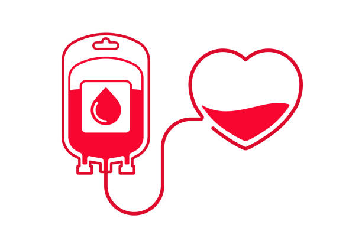

Cosas para tener en cuenta
¿Por qué es importante donar sangre?
La donación de sangre es un acto de solidaridad que puede salvar vidas en momentos críticos. Muchas personas necesitan transfusiones debido a accidentes, cirugías, tratamientos contra el cáncer, enfermedades crónicas o complicaciones en el embarazo. Una sola donación puede ayudar a salvar hasta tres vidas diferentes. Sin donantes voluntarios, los hospitales enfrentan graves dificultades para atender emergencias y tratamientos continuos. Donar sangre no solo es un gesto generoso, sino una necesidad constante para el sistema de salud.
¿Quiénes pueden donar sangre y cómo es el proceso?
Para ser donante de sangre, es necesario cumplir con ciertos requisitos básicos que garantizan tu seguridad y la del receptor. Generalmente, deben ser personas saludables entre los 18 y 65 años, con un peso mínimo de 50 kilogramos y sin enfermedades infecciosas. El proceso es rápido y seguro: se realiza una evaluación médica previa, una pequeña prueba de sangre para verificar tu estado de salud, y la extracción dura entre 8 y 10 minutos. Después, recibirás recomendaciones para recuperarte rápidamente. Donar sangre no causa daño ni debilidad, ya que el cuerpo repone el volumen donado en pocas horas.
Beneficios de donar sangre
Además del impacto positivo en la vida de otros, donar sangre también puede traer beneficios para tu salud. Durante el proceso, se realiza un pequeño chequeo que puede detectar señales tempranas de anemia o enfermedades. La donación ayuda a estimular la producción de nuevas células sanguíneas, mejorando la circulación y renovación del organismo. Muchas personas sienten una gran satisfacción emocional al saber que están ayudando a salvar vidas. Es un acto que une a la comunidad y fortalece el sentido de responsabilidad social.
Desmitificando los mitos sobre la donación
Existen muchos mitos que dificultan la decisión de donar sangre, pero la mayoría no tienen fundamento. Por ejemplo, donar sangre no causa debilidad ni aumenta el riesgo de infecciones. El proceso está supervisado por personal capacitado que utiliza materiales estériles y desechables para garantizar tu seguridad. Además, el volumen de sangre extraído es mínimo y el cuerpo lo repone rápidamente. Donar sangre no afecta tu rendimiento físico ni causa efectos secundarios graves. Informarse bien ayuda a tomar la mejor decisión.
